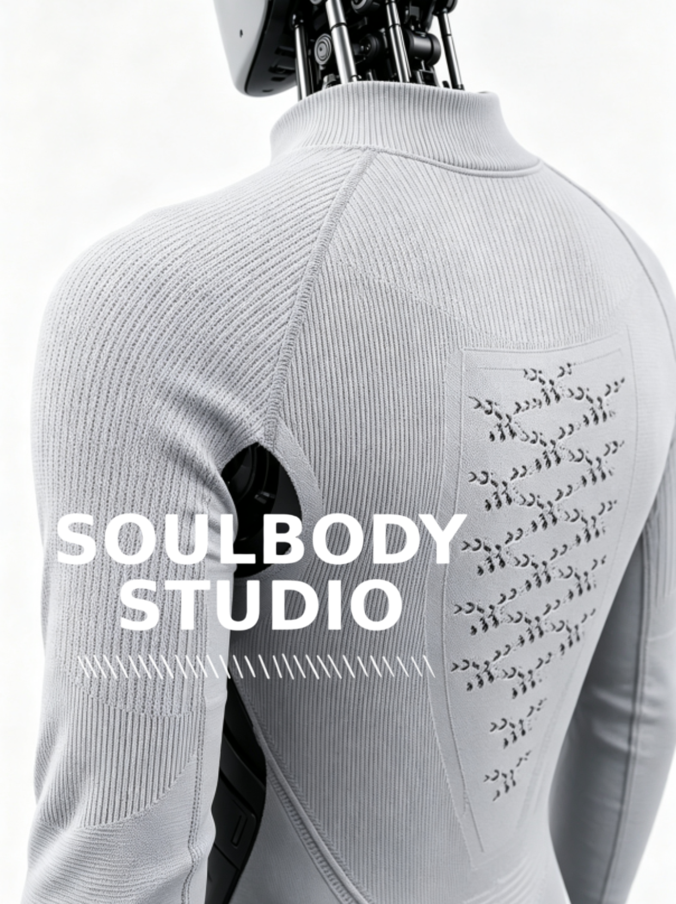

01 / ROBOSKINIndustry View · 8 min read
Why do robots need soft skin?
As robots move into hospitals, homes, exhibitions and service environments, surface materials influence contact safety, visual approachability, maintenance and functional integration.
- Choosing between rigid shells, silicone and knitted skins
- Faster iteration for research prototypes
- Moving from appearance to functional interface